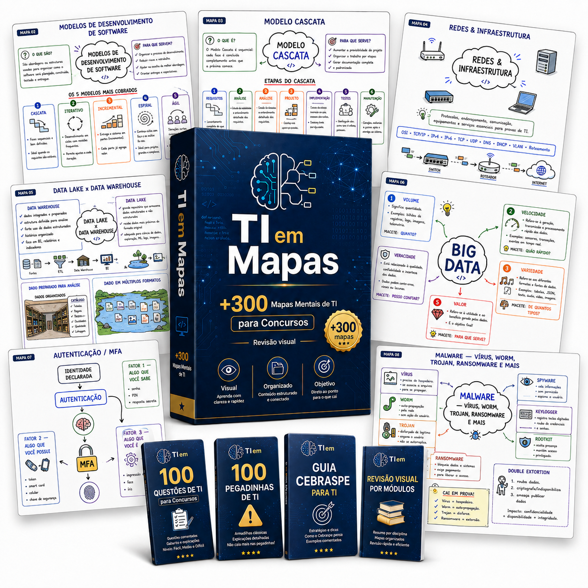
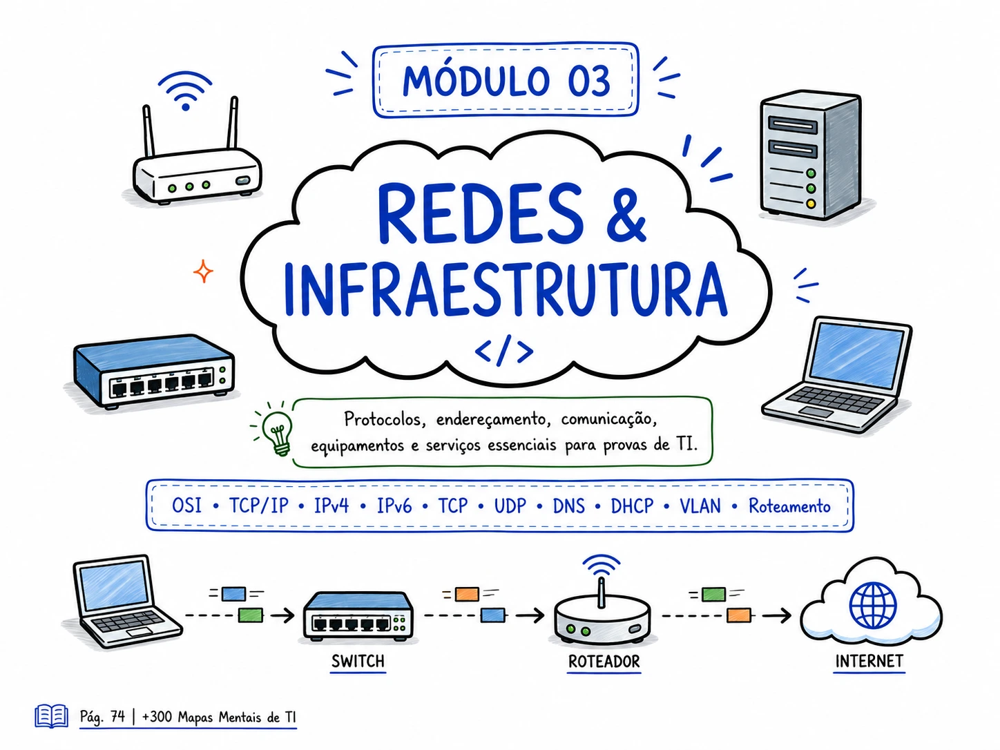
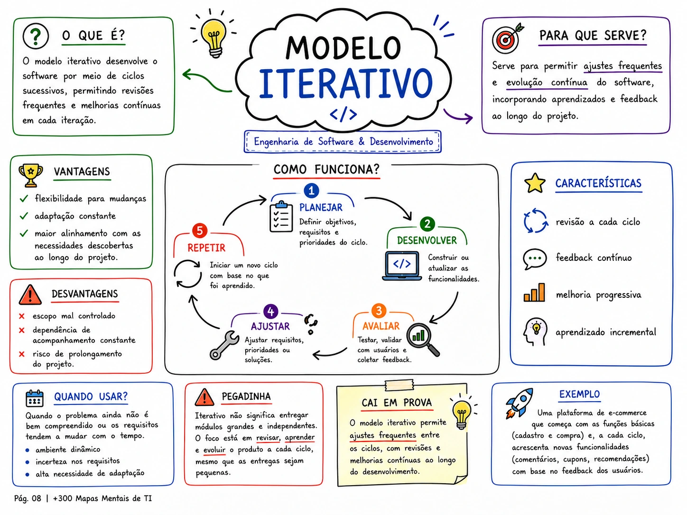
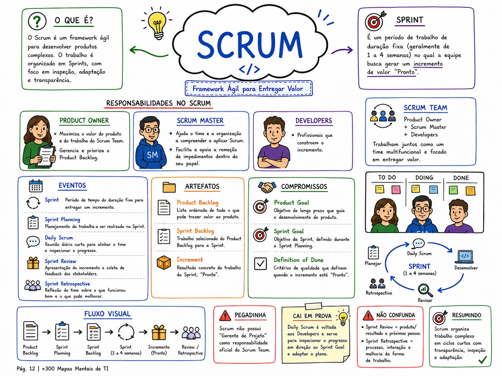
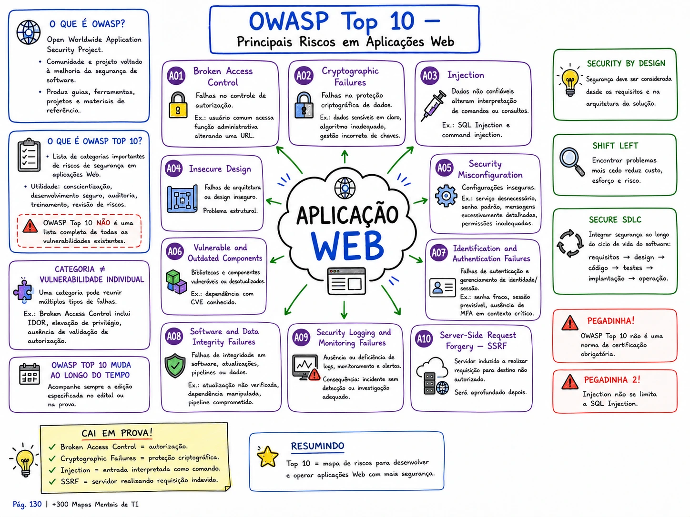
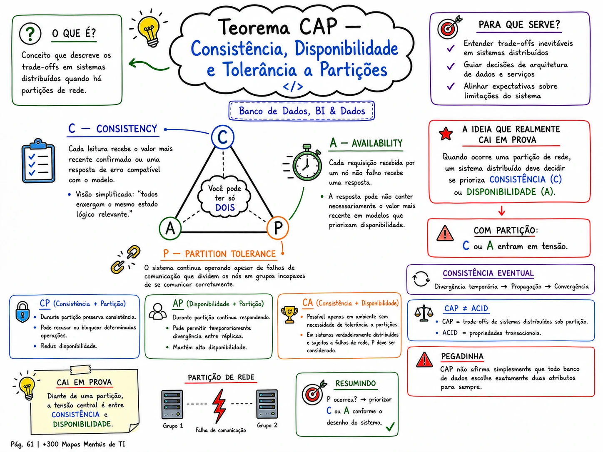
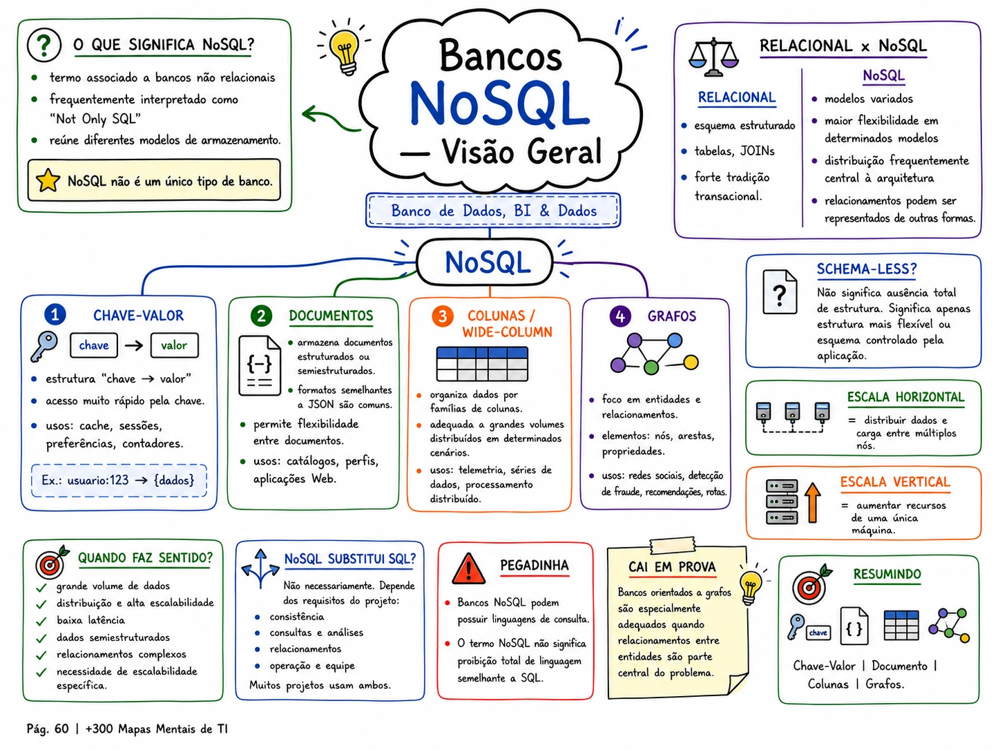
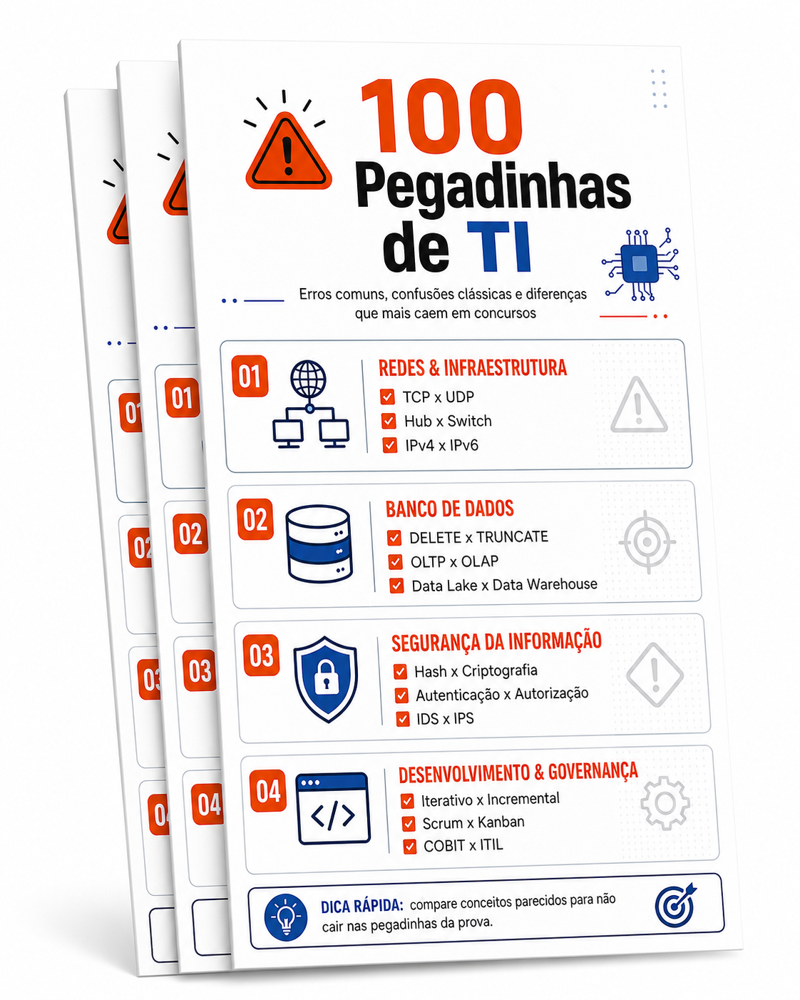
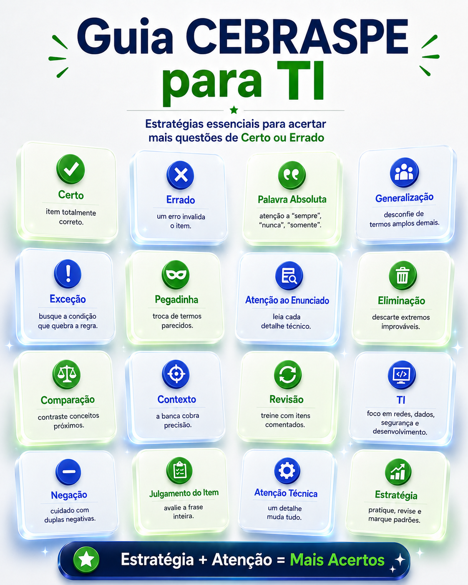
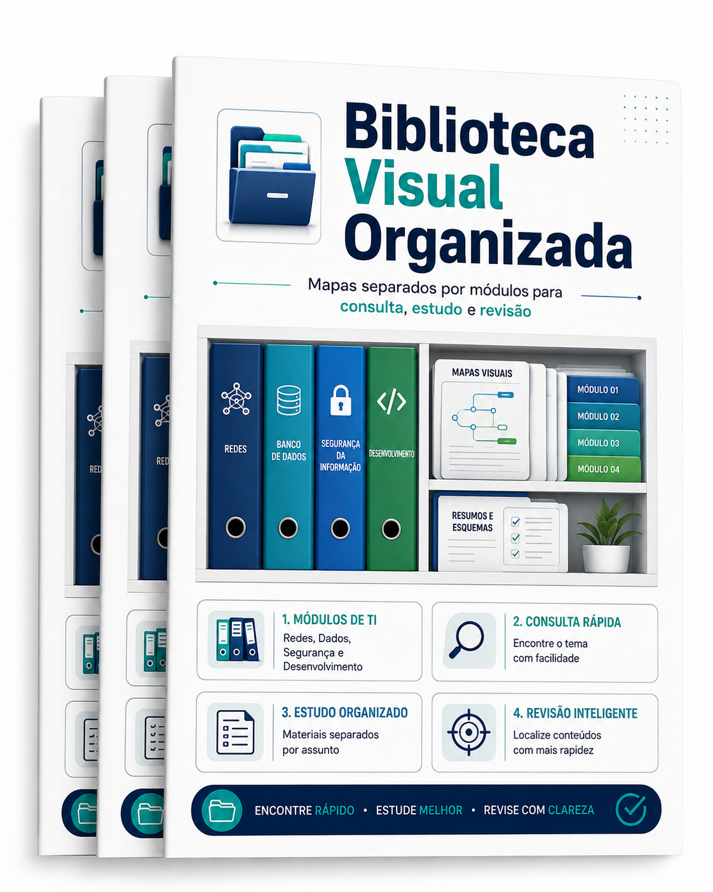

+300 Mapas Mentais de Tecnologia da Informação para estudar e revisar de forma visual para Concursos de TI

Para quem estuda para concursos de TI e quer transformar editais gigantes em conteúdos muito mais fáceis de consultar e revisar.
Acesso imediato • Pagamento único • Garantia de 7 dias
Você estuda TI, mas na hora de revisar parece que o edital não acaba nunca?
Quem está se preparando para concursos da área de Tecnologia da Informação conhece bem essa sensação.
Conteúdo demais
Conceitos parecidos
PDFs e apostilas enormes
Revisões demoradas
Sensação de esquecer conteúdos antigos
O problema não é simplesmente estudar mais. É conseguir organizar e revisar tudo aquilo que você já precisa aprender.
Conheça o TI em Mapas
O TI em Mapas reúne +300 mapas mentais de Tecnologia da Informação, organizados por área e desenvolvidos para ajudar na consulta, estudo e revisão dos principais assuntos encontrados em concursos públicos de TI.
É uma biblioteca visual de TI criada para você abrir, consultar e revisar.
Veja alguns dos mapas que você vai receber






Uma biblioteca completa para revisar diferentes áreas de TI
Os +300 mapas são organizados em grandes módulos.
Engenharia de Software & Desenvolvimento
Banco de Dados, BI & Dados
Redes & Infraestrutura
Segurança da Informação & Cibersegurança
Cloud, DevOps & Containers
Governança, Gestão & Projetos de TI
Sistemas Operacionais
LGPD, TI Pública & Contratações
Inteligência Artificial & Tecnologias Emergentes
Redes, Segurança, Banco de Dados e Desenvolvimento
COBIT, ITIL, PMBOK, Scrum e Kanban
Linux, Windows Server, Active Directory e LDAP
IA, Machine Learning, Deep Learning, LLMs e RAG
E esses são apenas alguns dos assuntos presentes nos +300 Mapas Mentais de TI.
Com o TI em Mapas, você consegue:
Revisar vários assuntos de TI em menos tempo
Visualizar diferenças entre conceitos semelhantes
Organizar melhor conteúdos extensos
Consultar rapidamente um conceito esquecido
Criar uma rotina de revisão mais organizada
Transforme revisão visual em preparação prática
Além dos +300 mapas, desenvolvemos materiais complementares para ajudar em outras etapas dos estudos.
100 Questões de TI para Concursos
Questões organizadas por áreas e assuntos para você praticar depois da revisão.

100 Pegadinhas de TI
Material focado em diferenças e detalhes que podem confundir na hora da prova.

Guia CEBRASPE para TI
Material complementar para questões de TI no formato Certo ou Errado.

Biblioteca Visual Organizada
Mapas separados por áreas para consulta, estudo e revisão.
Materiais complementares disponíveis apenas no Plano Completo.
Escolha seu acesso
De R$ 97,90 por:
Plano Essencial
Pagamento único
- +300 Mapas Mentais de TI
- 100 Questões de TI para Concursos
- 100 Pegadinhas de TI
- Guia CEBRASPE para TI
- 9 grandes módulos
Plano Completo
Pagamento único
- +300 Mapas Mentais de TI
- 100 Questões de TI para Concursos
- 100 Pegadinhas de TI
- Guia CEBRASPE para TI
- 9 grandes módulos
- Atualizações da versão adquirida
Acesso imediato após a confirmação do pagamento
Quem começou a usar, percebeu a diferença na organização da revisão
Garantia de 7 dias
Você terá 7 dias para acessar e conhecer o TI em Mapas. Se dentro desse período entender que o material não faz sentido para seus estudos, poderá solicitar o reembolso dentro das condições da plataforma de pagamento.
Comece a revisar TI de forma mais visual hoje.
Tenha uma biblioteca com +300 Mapas Mentais de Tecnologia da Informação organizada para consultar sempre que precisar.
Pagamento único • Acesso imediato • Garantia de 7 dias